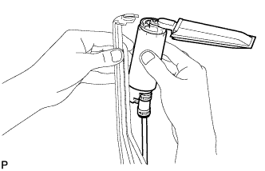

ТОПЛИВНЫЙ НАСОС (для 3-дверных моделей) > ПОВТОРНАЯ СБОРКА |
| 1. УСТАНОВИТЕ ФИЛЬТР ТОПЛИВНОГО НАСОСА |
Закрепите топливный фильтр с помощью нового фиксатора.
| 2. УСТАНОВИТЕ ТОПЛИВНЫЙ НАСОС |
Подсоедините топливный шланг к топливному насосу и установите топливный насос.
Подсоедините топливный шланг к подающему топливопроводу топливного насоса.
| *1 | Подающий топливопровод |
Установите резиновый амортизатор на топливный насос.
|  |
Установите топливный насос, нажав на его нижнюю сторону.
Подсоедините разъем провода к топливному насосу.